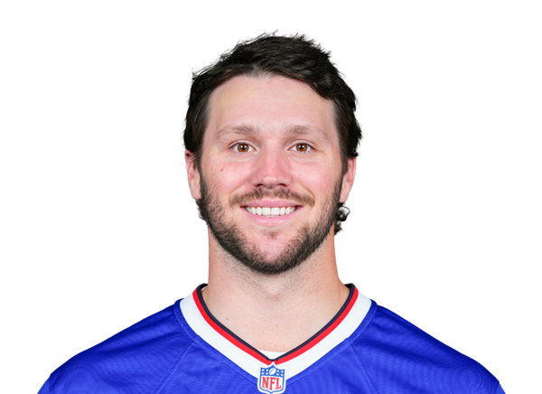

BALL KEEP
Dynasty · Redraft
Player File · QB BUF

Josh Allen
QB · BUF · 30 · Wyoming
The tape
Josh Allen is still the player Ball Keep is built around. Seven sources — PFN, Dynasty Nerds, FantasyPros, KeepTradeCut, and the three X experts we track — all have him inside the top four Superflex assets, and the average lands at 2.0. That is not a recency spike. It is the market admitting that a quarterback who runs, extends, and finishes in the end zone is the safest way to keep a Superflex roster relevant through 2029.
The 2025 tape is the same argument on film: launch-point throws and designed keepers, with the Bills still built to let him create when protection breaks. Redraft boards (Field Yates has him in the high 20s) treat him as a mid QB1 because 1QB leagues do not have to pay the second-starter tax. Dynasty Superflex does. That split is the whole point of The Keep.
Plus
- Seven-board Superflex lock: Keep #1, average 2.0.
- Dual-threat floor still separates him from every other aging QB1.
Minus
- Turns 31 in 2026 — first real dynasty age tax on a perennial 1.01.
- Yates PPR has him in the late 20s; 1QB redraft does not pay the SF premium.
Board graph
Spread 1–11 · 32 sources
Every Board
Spread 1–11 · 32 sources
| Source | Rank |
|---|---|
| PFN (Katz/Soppe) | 1 |
| Dynasty Nerds | 1 |
| FantasyPros ECR | 1 |
| ESPN (Karabell) | 1 |
| Draft Sharks | 1 |
| RotoWire | 1 |
| Derek Brown (X) | 1 |
| DLF Superflex | 1 |
| PFF Dynasty | 1 |
| The Athletic | 1 |
| Yahoo Fantasy | 1 |
| Rotoworld | 1 |
| Sleeper Superflex | 1 |
| Underdog ADP | 1 |
| Footballguys | 1 |
| 4for4 | 1 |
| FFToday | 1 |
| WalterFootball | 1 |
| Dynasty Trade Calculator | 1 |
| Contender desk | 1 |
| DLF ADP mix | 1 |
| Pat Fitzmaurice (X) | 2 |
| KeepTradeCut SF | 3 |
| Andrew Erickson (X) | 3 |
| CBS Sports | 3 |
| Fantasy Alarm | 3 |
| Fantasy Life | 5 |
| Fantasy Footballers | 11 |
| Establish The Run | 11 |
| numberFire | 11 |
| PlayerProfiler | 11 |
| Rebuild desk | 11 |
Tape · 2025 season
Josh Allen 2025 - 26 Highlights | BEST QB IN NFL 🔥
BK News
- Wild NFL Rumor Claims Lamar Jackson Could Request Trade to Specific Losing Team in 2027
- Buffalo Bills Training Camp Update; Josh Allen, DJ Moore, CJ Gardner-Johnson Injury | The Air Raid Hour
All player pages · The Keep · The Board · Recent deals · Hot 'n' Cold · BK News · Trade calculator